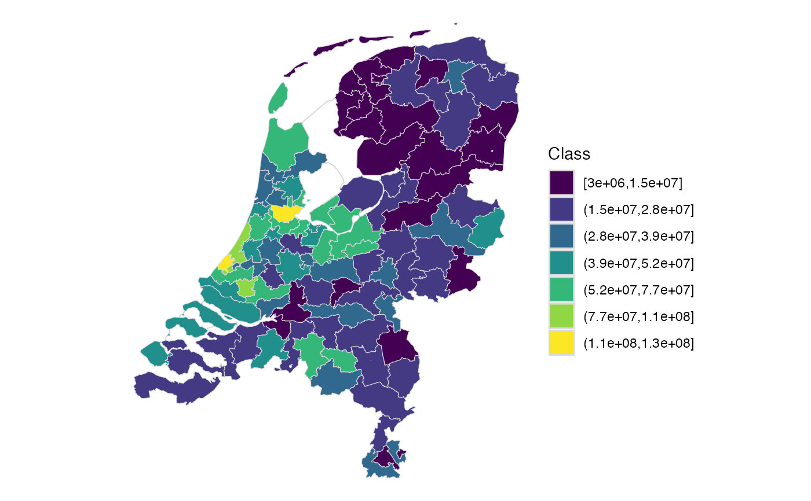

Takes an object produced by choropleth_sf(), and creates
the correspoding choropleth map.
Usage
choropleth_ggplot2(
sf_object,
value = output,
n = 7,
dig.lab = 2,
legend_title = "Class",
option = "D",
direction = 1
)Arguments
- sf_object
object of class sf
- value
column to shade the polygons
- n
number of clusters (default is 7)
- dig.lab
number of digits in legend (default is 2)
- legend_title
title of legend
- option
a character string indicating the colormap option to use. Four options are available: "magma" (or "A"), "inferno" (or "B"), "plasma" (or "C"), "viridis" (or "D", the default option) and "cividis" (or "E").
- direction
Sets the order of colors in the scale. If
1, the default, colors are ordered from darkest to lightest. If-1, the order of colors is reversed.
Examples
test <- points_to_polygon(nl_postcode2, insurance, sum(amount, na.rm = TRUE))
#> 80 points fall not within a polygon.
choropleth_ggplot2(test)
